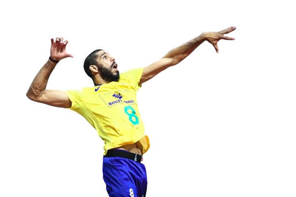
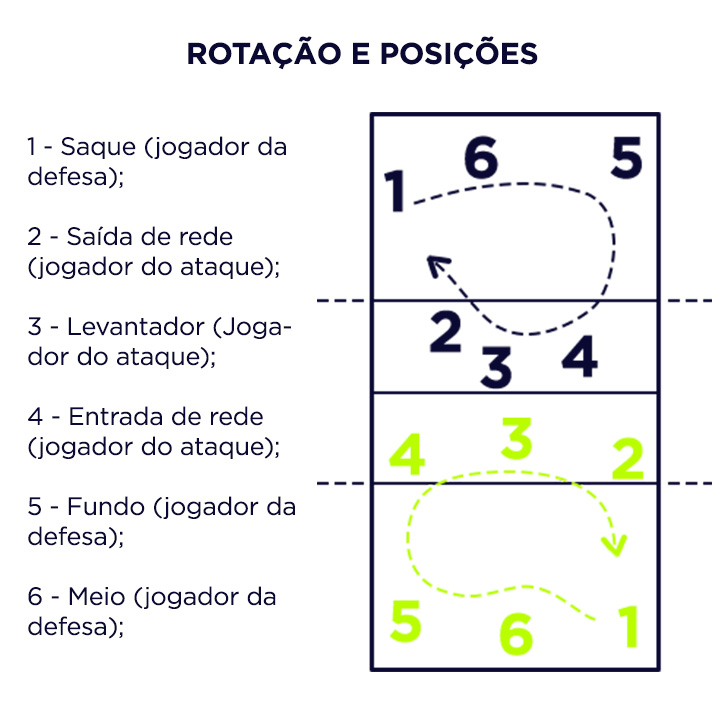

Bem vindo Pedro!
Funcao do OPOSTO no voleibol
Atacante é o jogador de voleibol responsável por finalizar as jogadas de ataque do time. Existem diversas posições ocupadas pelos atacantes no voleibol.

O Oposto É o jogador que atua na posição diretamente oposta ao levantador, ele é o mais especializado em ataque no time, normalmente. Ataca normalmente das posições 2 e 4, além das posições do fundo. Para ele que é mandada a "bola de segurança", que nada mais é que uma jogada simples, feita quando o passe está ruim ou não se quer arriscar muito.
